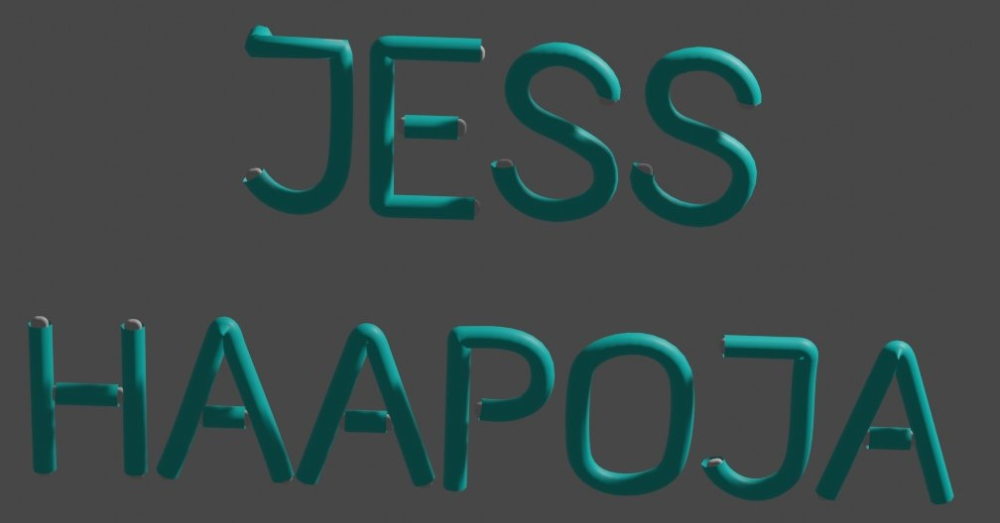

Portfolio
Example of websites coded for school


First part of my final project for introduction to computer graphics
The class was instructed to choose one of the seven sofeware tools covered in the previous weeks to create a digital piece of art that is disinkly different from an insperation image found online.
I wanted to create a wallpaper to use on my PC that makes me happy. So by croping out and shifting the colors of images, I placed a few special animals from my life that have passed away or moved on to different families in a mystical forest to hang out with each other.

Inspiration image: original location can be viewed:HERE

PC wallpaper project created in photoshop.
Secound part of my final project for introduction to computer graphics
We were instructed to choose a different software then part one and follow an online tutorial the make a simple portfolio project.
I choose to work with Blender and using a Blender Guru tutorial made a neon sign to diplay my name. The majority of work was manipulating the vertise on the letters to make them look perporshional, and extruding portions of the letters to make them look like there connected.
This is the work in progress render of my project.
Below is the Blender Guru tutorial I used for the secound part of the my final project. You can find the secound part of his tutorial as well as other Blender tutorials by him. HERE